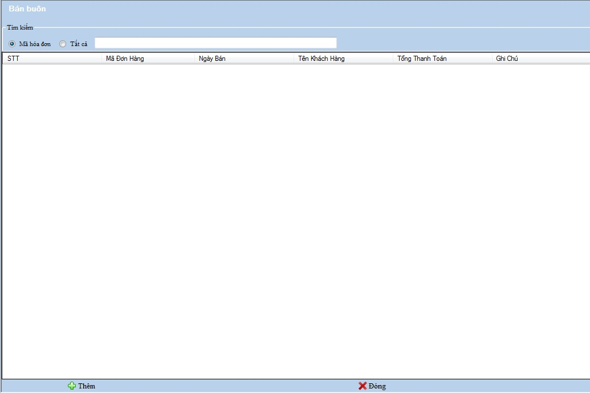

Cách thao tác với quản lý Bán buôn:
Vào Hệ thống ->Bán buôn

Thanh tiêu đề: Chứa tên của nghiệp vụ đang làm việc.
Tìm kiếm: Chọn loại muốn tìm kiếm , bạn nhập vào tên hàng cần tìm .
Thanh công cụ : Chứa các công cụ phục vụ việc quản lý,theo dõi, bổ sung bán buôn
a.Thêm mới
Chọn nút thêm và khai báo các thông tin trên hộp thoại xuất hiện .
- Ô mã khách hàng bạn có thể kích đúp chọn nút có hình ảnh chiếc kính lúp hoặc nhấn F4 để chọn Mã khách hàng , hộp thoại xuất hiện.

- Trong Bán buôn có bán buôn theo khách hàng và bán buôn theo đơn đặt hàng
- chọn kích đúp đơn đặt bán hàng nếu lập hóa đớn bán buôn theo đơn đặt hàng .
- Nhập đầy đủ thông tin vào các ô trống bên trên
- Ở ô trống bên dưới , bạn nhấn F4 để chọn Hàng hóa ,quét mã vạch hoặc nhập mã hàng hóa ,thông tin của hàng hóa đó sẽ được hiển thị lên các ô trống bên cạnh sau khi bạn nhập mã hàng hóa.
- Kích đúp nút thêm bên cạnh các ô thông tin hàng hóa
- Thêm hàng hóa thành công vào Bán buôn ,sẽ có hàng hóa được hiển thị phía dưới
- Thêm thành công hàng hóa, thông tin thanh toán tổng tiền của các mặt hàng sẽ hiển thị các ô bên dưới.
- Kích đúp chọn nút Thanh Toán ở menu dưới để hoàn tất giao dịch .
- Kích đúp chọn nút In ở menu dưới để in hóa đơn bán buôn
Điền thông tin của danh mục theo hướng dẫn,những ô bắt buộc phải nhập nếu bạn để trống hệ thống sẽ báo lỗi như hình sau:

- Chọn Trở về ở thanh công cụ dưới để trở về Nghiệp vụ quản lý bán buôn